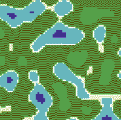
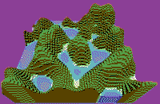
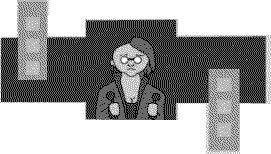
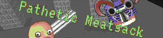
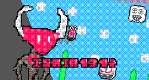
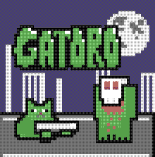

Began to experiment with procedural generation, maybe to make a game out of this, not sure.
Just the idea of an algorithm generating an infinite virtual world is fascinating to me, and i love the idea of making a piece of software that feels alive and independent of the user's input.
Had been active in the procedural generation community on Reddit, there is a lot of interesting gamedev stuff out there.
 Made a mecha themed runner for the Blackthornprod Game Jam #3 with the theme "less is more". The way i implemented the theme is by being minimalist in the mechanics and aesthetics: The game is played with just one button and all the graphics are made in a grayscale color scheme.
Metal Vomit was also my first "3D game" with all the game models and textures made by me, a fun stepping out of my confort-zone, as i never did 3d modeling before.
Play online/download at itch.io.
Made a 2D Arcade Boss Rush game for the Screamortality game jam.
Take control of a modified human being that now is just reduced to an ugly blob of meat with a gun. Fight and endless stream of pain-inducing machines or die like a pathetic meatsack.
For the graphicals i experimented with using real photos taken from free stockphotos sites, using a cut-out animation style. Have to repeat these techniques for a future game, looks really cool and is surprisingly easy to make.
Play online/download at itch.io.
Entered GMTK Game Jam 2021, the jam's theme was "Joined Together"
Your humanoid creations are all messed up. Use a scalpel to separate as many siamese twin homunculus as you can in the given time.
For this jam i tried to make something completely different from my usual arcadey shoot-em-ups, going for a goofy "surgeon" simulator.
Play online/download at itch.io.
Joined the RNDGAME JAM II, a jam where the theme is given by a random idea generator.
The theme i got was "Beasts of treason", so i made a shoot em' up where the main character is a renegade angel a.k.a a demon, fighting his friends turned foes.
This jam started around the time i was was learning and experimenting with Pico8, a "fantasy console" that emulates the restriction of 80s computers and consoles. Scary as it sounds, i think the best way learn how to use a game engine is making a game in a short amount of time, so i did that. To my surprise, the game got a positive reception and ended looking like a lost NES shoot em' up.
Play online/download at itch.io.
Joined the VimJam 2, with the themes "Boss" and "on the edge". Still obsessed with pico8, and very pleased with the end result of Isaia1314, i decided to make another arcadey pico8 shooter.
Take control of Gatoro, a cat that just saw a demonic entity appear outside his apartment. Fight this strange visitor on the edge of your building roof.
Another aim of this proyect was implementing in Pico8 a very common aspect of my games: having a cutscene. I think i like animating as much as coding mechanics, and making animation from scratch is double the fun.
Play online/download at itch.io.
